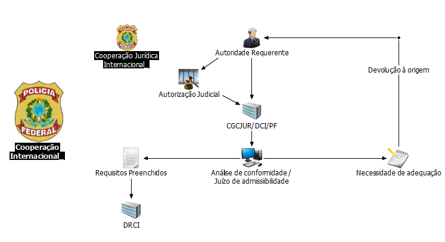
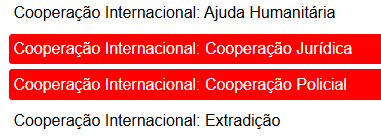
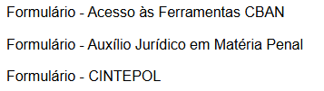
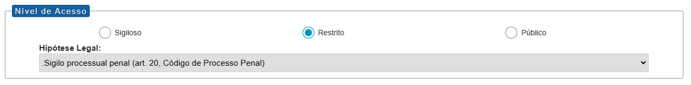
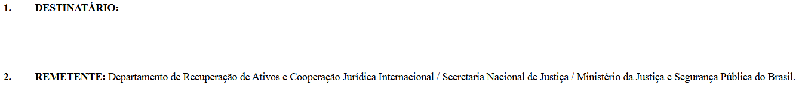
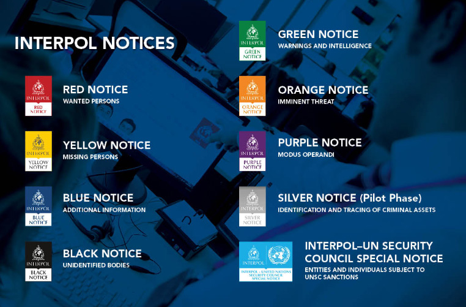

A cooperação internacional é uma técnica de investigação colocada à disposi ção das autoridades responsáveis pela investigação criminal que tem se mostrado essencial no combate à criminalidade organizada transnacional, permitindo que a resposta dos Estados seja tão global quanto a atuação das organizações criminosas, evitando que estas encontrem refúgio em fronteiras estatais.
Trata-se de um meio de investigação essencial na repressão ao crime orga nizado, uma vez que essas organizações atuam transnacionalmente, explorando fronteiras, diferentes legislações e lacunas de jurisdição para dificultar investigações e processos nos locais em que praticam atos criminosos.
Nesse cenário, dentre os meios de obtenção de provas disponíveis à equipe policial, estão as diferentes formas de se obterem informações, provas ou medidas cautelares no exterior mediante os diferentes canais de cooperação internacional, os quais possuem características e trâmites próprios que devem ser considerados no momento de optar ou não por sua utilização.
A cooperação internacional pode ser dividida em Cooperação Policial Internacional e Cooperação Jurídica Internacional.
Na Cooperação Policial Internacional não há reserva de jurisdição, ela independe de tratados formais e pode se apoiar em protocolos de entendimento, acordos policiais, redes de cooperação etc. Nessa hipótese, é realizado o intercâmbio de informações que não demanda relativizar direitos individuais dos investigados protegidos por reserva de jurisdição.
Já a Cooperação Jurídica Internacional será utilizada quando for necessária a obtenção de elementos probatórios, medidas assecuratórias, recuperação de ativos, bem como de outras diligências produzidas ou remetidas por outros países, no interesse da instrução de procedimento investigatório. Havendo reserva de jurisdição, ou seja, se a diligência pretendida implicar a relativização de direitos fundamentais sujeita à cláusula de reserva de jurisdição, a cooperação jurídica internacional é a via indispensável.
Assim, a cooperação policial internacional e a cooperação jurídica interna cional são complementares: a primeira abre caminhos e antecipa informações, enquanto a segunda consolida o valor probatório e garante validade processual.
Essa dualidade da cooperação internacional será devidamente abordada em tópicos específicos, sendo que o objetivo nesse momento é somente contextualizar a sua prática dentro da investigação policial.
Os procedimentos de cooperação policial e jurídica internacional da Polícia Federal são regidos pelos princípios da legalidade, impessoalidade, moralidade, publicidade, eficiência, respeito aos direitos humanos, reciprocidade, confiden cialidade e proporcionalidade.
No âmbito da Polícia Federal, as atividades relacionadas à cooperação policial e jurídica internacional foram regulamentadas por meio da Instrução Normativa DG/PF nº 306, de 3 de abril de 2025, servindo como base normativa aos policiais federais.
Em referido normativo, restou definido quais unidades internas são conside radas unidades de cooperação internacional, a saber:
I - Diretoria de Cooperação Internacional–DCI/PF;
II - Coordenação-Geral de Cooperação Policial Internacional–
CGCPOL/DCI/PF;
III - Coordenação-Geral de Cooperação Jurídica Internacional–
CGCJUR/DCI/PF;
IV - Núcleos de Cooperação Internacional–NCIs;
V - Adidâncias da Polícia Federal;
VI - Oficialatos de Ligação da Polícia Federal;
VII - Centros de Cooperação Policial Internacional–CCPIs;
VIII - Comandos de Cooperação Policial Direta de Fronteira–CCPDFs; e
IX - outras unidades de cooperação internacional análogas, desde que
assim reconhecidas pela DCI/PF.
Também é importante destacar que os procedimentos relacionados às ativi dades de cooperação policial e jurídica internacional devem ser formalizados nos sistemas oficiais da Polícia Federal, admitindo a utilização dos seguintes sistemas:
I - Sistema de Cooperação Internacional – Sinterpol;
II - Sistema Eletrônico de Informações – SEI-PF;
III - Sistema de Documentos de Inteligência – Sisdoc; e
IV - Sistema Oficial de polícia judiciária – e-POL.
Nesse diapasão, importante destacar que o Sinterpol é utilizado para o registro, instrução, tramitação e arquivamento, no âmbito das unidades de cooperação internacional da Polícia Federal, dos procedimentos de coope ração policial e jurídica internacional.
Já o sistema SEI-PF será utilizado para o registro, instrução, tramitação e arquivamento dos processos administrativos relacionados aos procedimentos de cooperação policial e jurídica internacional.
No que tange ao uso do Sisdoc, este serve para a gestão documental de informações de inteligência relacionadas às atividades de cooperação policial e jurídica internacional e observará as regras de registro, tramitação e sigilo definidas pela área gestora da atividade de inteligência na Polícia Federal.
Por fim, o sistema e-POL será utilizado para a autuação, instrução, tramitação e arquivamento, no âmbito das unidades de polícia judiciária da Polícia Federal, dos Registros Especiais de cooperação jurídica internacional.
A cooperação jurídica internacional é o conjunto de procedimentos que envol vem o modo formal de solicitar a outro país alguma medida judicial, investigativa ou administrativa necessária para um caso concreto em andamento, a fim de que o resultado da diligência pretendida possa ser utilizado com valor probatório.
Existe uma modalidade de cooperação jurídica internacional em matéria penal denominada auxílio jurídico direto ou simplesmente auxílio direto, cuja utilização mostra-se bastante profícua na fase de investigação. Esta ferramenta assegura mais agilidade na produção da prova no exterior, já que se caracteriza pela tramitação direta entre autoridades centrais dos Estados envolvidos, sem necessidade de homologação ou intermediação do Poder Judiciário.
O pedido de cooperação jurídica internacional por meio do auxílio direto será utilizado quando necessária a obtenção de elementos probatórios, medidas assecuratórias, recuperação de ativos, bem como de outras diligências produzi das ou remetidas por outros países, no interesse da instrução de procedimento investigatório.
Sua formalização ocorre por intermédio do Pedido de Assistência Jurídica Internacional, cujo fluxo inicial de tramitação, no curso de apuratório policial, pode ser dividido em três fases:
Fase preparatória:
Equipe de investigação: identifica a necessidade do pedido de cooperação e, com base nos elementos de informação coletados, avalia os benefícios de realizar o pedido.
Equipe de investigação: elabora Informação de polícia judiciária apresentando a relação do objeto do pedido de cooperação com a investigação em curso.
Fase judicial (quando a medida estiver sujeita a cláusula de reserva de jurisdição):
Delegado de Polícia Federal: elabora representação detalhada, com exposição dos fatos, fundamentação jurídica e indicação da medida requerida.
Juiz Federal: decide sobre a medida quando envolver reserva de jurisdição (ex.: quebras de sigilo, buscas e apreensões).
Fase administrativa:
Delegado de Polícia Federal: elabora procedimento no sistema SEI e encaminha o pedido e a decisão judicial à Coordenação Geral de Cooperação Jurídica (CGCJUR/DCI/PF).
CGCJUR/DCI/PF: realiza a análise preliminar do pedido, tradução e enca minhamento ao Departamento de Recuperação de Ativos e Cooperação Jurídica Internacional (DRCI/Senajus/MJSP), sendo a Autoridade Central no Brasil para a tramitação de pedidos de cooperação jurídica internacional em matéria penal.
DRCI/Senajus/MJSP: envia o pedido à autoridade estrangeira competente.
Na fase preparatória, será realizada a análise da necessidade de expedição de um pedido de cooperação internacional (CI). A avaliação deverá ser cuida dosamente realizada pelo Delegado de Polícia Federal em conjunto com toda a equipe de investigação, considerando que os elementos de prova indispensáveis à investigação se encontram em território estrangeiro e serão trazidos ao processo nacional para compor o caderno probatório. Os pedidos podem incluir: oitiva de testemunhas, compartilhamento de documentos bancários ou fiscais, bloqueio e repatriação de ativos, bem como pedidos de busca e apreensão, prisão etc.
Primeiramente, deve-se ter clareza no que se objetiva obter com o pedido de cooperação jurídica internacional e quais as estratégias para a continuidade da investigação caso a resposta seja negativa, não venha a contento ou demore tempo superior ao da tramitação do inquérito para retornar. Antes de realizar o pedido, se possível, é importante entrar em contato com o Núcleo de Cooperação Internacional regional (NCI) ou com o Adido da PF no país requerido para entender a viabilidade de atendimento da demanda e seus requisitos especiais, pois o encaminhamento deve conter um texto claro, com um objetivo específico e delimitado, requisitos fundamentais para se obter uma resposta satisfatória.
Não é possível estipular um prazo médio de atendimento, ao depender do tipo de demanda e de quem será o país requerido, mas a experiência informa que a tramitação costuma demandar de seis meses a um ano. Casos complexos ou que dependam de homologação judicial no país destinatário podem demorar mais tempo. Em contrapartida, situações urgentes podem ser tratadas por meio da Coordenação-Geral de Cooperação Jurídica Internacional (CGCJUR/DCI/PF) e Núcleos de Cooperação Internacional (NCI) de sua Superintendência, como em casos de prisões para fim de extradição, os quais podem tramitar em semanas.
Decidido pelo envio do pedido de Cooperação Jurídica Internacional (CJI) e identificado qual será o seu objeto, passamos para a fase judicial.
A base legal para a CJI são acordos, tratados e convenções internacionais; caso não se enquadre em uma das possibilidades, o pedido será remetido com base na promessa de reciprocidade. Com base nesses instrumentos, o Estado brasileiro adquire o direito de solicitar cooperação aos outros Estados parte e tem o dever de apreciar os pedidos recebidos de outros países, conferindo cumprimento quando preenchidos os requisitos necessários. São princípios norteadores da cooperação jurídica internacional:
Alguns países com os quais o Brasil possui acordos bilaterais de
assistência legal mútua dispensam a exigência de dupla tipificação.
A melhor prática impõe que, na hipótese de a medida ser sujeita à cláusula de reserva de jurisdição, o Delegado de Polícia Federal provoque a atuação judicial, instruindo o pedido com base nas provas e elementos de informação colhidos no inquérito policial, para posterior remessa do pedido à Autoridade Central.
Nessa hipótese, a elaboração da representação judicial solicitando a medida pretendida deve atender aos requisitos específicos de cada caso. Em resumo, na representação judicial para CJI é essencial (i) indicar legitimidade e base legal, (ii) narrar os fatos com precisão, (iii) justificar juridicamente a medida, (iv) especificar o que se pede e anexar documentos necessários, e (v) informar que será realizado o encaminhamento pelo DRCI.
Assim, deve-se descrever de forma clara e objetiva: os fatos investigados (local, data, modus operandi), a identificação dos indivíduos ou empresas envolvidos, nexo causal entre o fato e a medida solicitada, evitando a realização de pedidos genéricos.
Outro requisito é a transcrição os dispositivos legais brasileiros aplicáveis e indicar a pena cominada ao delito. Ressalta-se que a medida a ser requerida deve ser prevista e não pode ser vedada pela legislação do país requerido.
Importante ter em mente que o pedido tramitará por vias diversas das vias policiais, para manter o sigilo da investigação e evitar a exposição de alvos que não estão diretamente vinculados ao Estado requerido. Recomenda-se que na representação judicial seja solicitada a individualização das condutas dos inves tigados por país destinatário, em decisões separadas e em processos apartados para continuidade dos trâmites.
Para exemplificar, imagine um caso de investigação sobre tráfico internacional de drogas em que é identificada a atuação de uma organização criminosa com o fornecedor dos entorpecentes sediado no Paraguai, os responsáveis pela logística sediados no Brasil e o destinatário final sediado nos Emirados Árabes. A autoridade policial, ao realizar a representação pela decretação de prisão preventiva, poderá solicitar ao juiz que elabore decisões individualizadas para serem remetidas ao Paraguai e aos Emirados Árabes por meio de CJI, com o objetivo de preservar o sigilo da investigação.
Por se tratar de questão sujeita à cláusula de reserva de jurisdição, é com o deferimento do pedido cautelar apresentado perante o Poder Judiciário no Brasil que será o momento de instruir o pedido de auxílio direto. Aqui temos o início da fase administrativa, onde será preenchido o formulário padrão, acompanhado da decisão judicial que deferiu o pedido cautelar, e encaminhado até a Autoridade Central.
A Instrução Normativa DG/PF nº 306/2023 estabelece que a cooperação jurídica internacional em matéria penal deve ser realizada, prioritariamente, pela Autoridade Central brasileira – atualmente exercida pelo Departamento de Recuperação de Ativos e Cooperação Jurídica Internacional (DRCI/Senajus/MJSP)
A Autoridade Central é o órgão responsável pelo exame dos pedidos, sugerindo adequações e exercendo juízo de admissibilidade administrativo, com o objetivo de promover a efetividade da cooperação jurídica em cada país.
Portanto, a Cooperação Jurídica Internacional é um ato formal realizado, no Brasil, por intermédio da Autoridade Central (DRCI/Senajus/MJSP), após provocação do Delegado de Polícia Federal ou do MPF. A Autoridade Central atua como intermediário, visando garantir que a cadeia de custódia da medida solicitada no exterior não seja quebrada, analisando a conformidade do pedido e encaminhando-o à autoridade central estrangeira.
A jurisprudência reforça a necessidade de observância ao trâmite formal. O STJ já declarou nulo pedido de cooperação realizado fora da via da Autoridade Central (HC 159.736/SP, Rel. Min. Rogério Schietti, j. 13/12/2011). O STF também destacou que compete ao Ministério da Justiça, via DRCI, centralizar tais atos (Ext 1.136, Rel. Min. Celso de Mello, j. 03/12/2009).
Portanto, a solicitação de assistência jurídica internacional é medida indispen sável quando a investigação criminal demanda a prática de atos processuais ou a obtenção de provas situadas no exterior.

Essa fase administrativa do pedido se inicia no Sistema Eletrônico de Informações (SEI) da PF, no qual já existe um formulário padrão para inserção dos dados necessários visando à tramitação do pedido de auxílio direto. Trata-se do formulário de auxílio jurídico em matéria penal.
No SEI, deverá ser iniciado um novo processo, selecione o tipo de processo: Cooperação Internacional: Cooperação Jurídica:

Na escolha de nível de acesso, marque a opção sigiloso e a hipótese legal: ”Sigilo processual penal (art.20, Código de Processo Penal)”.
Após, na barra superior, clique em Incluir Documento e escolha o tipo de documento: Formulário – Auxílio Jurídico em Matéria Penal.

Os documentos podem ter nível de sigilo diverso do nível escolhido no pro cesso, nesse caso deve ser escolhido o nível de acesso restrito:

Nesse momento temos o processo criado e iremos iniciar o preenchimento do Formulário, o qual foi aqui dividido para facilitar a didática e apresentar as observações necessárias:
Sigilo: caso não seja informada a necessidade de tramitação sigilosa do pedido de CJI, as partes, se por elas solicitado, poderão ter acesso ao conteúdo do mesmo, com base na Lei n.º 12.527/2011. Ademais, se porventura, no decorrer do processo penal, o pedido passe a ser classificado como sigiloso pela autoridade requerente, a CGCJUR/DCI deverá ser informada imediatamente.

Destinatário: Autoridade para a qual é endereçado o pedido – no caso dos EUA, por exemplo, a Autoridade Central é o Departamento de Justiça dos Estados Unidos da América. Sempre acrescentar a expressão “Autoridade Central de....” e não simplesmente o país. Portanto, deve-se inserir Autoridade Central da Bélgica, Autoridade Central da Colômbia, Autoridade Central da República de Portugal etc. Caso haja dúvida sobre qual é a autoridade central do país requerido, pode-se solicitar orientações à CGCJUR/DCI por meio do endereço eletrônico cgcjur.dci@ pf.gov.br ou pelos telefones: 61-2024-7450 ou 9065.
Remetente: Departamento de Recuperação de Ativos e Cooperação Jurídica Internacional do Ministério da Justiça e Segurança Pública.
Autoridade Requerente: indicar o órgão e autoridade competente encarre gada do inquérito, da investigação ou da ação penal em curso, informar dados de contato da delegacia de lotação, e-mail funcional e telefones de contato, caso a autoridade responsável pelo cumprimento da medida no país estrangeiro julgue necessário esclarecer alguma dúvida junto à própria autoridade a quem será dirigido o resultado.
Referência: Identificar nominalmente o caso (nome da Operação) e incluir o número da investigação, do inquérito policial ou da ação penal em curso, bem como informações que auxiliem na identificação do caso.
Fatos: Elaborar uma narrativa clara, objetiva e completa dos fatos, des crevendo elementos essenciais, nos quais constem o lugar, a data e a maneira pela qual a infração foi cometida, apresentando o nexo de causalidade entre a investigação em curso, os suspeitos e o pedido de assistência formulado. As autoridades estrangeiras necessitam de uma premissa factual e do nexo causal para o cumprimento do pedido de assistência. Não é necessária a comprovação dos fatos descritos neste item, não sendo recomendável o envio da cópia da portaria do inquérito policial, informação, representação, auto de apreensão etc.), exceto quando essenciais para a compreensão dos fatos, ou demonstração de que a medida solicitada foi autorizada judicialmente, por exemplo. É comum o envio da decisão de quebra de sigilo, sendo desnecessária, em regra, a representação.
Transcrição dos dispositivos legais: Referência e cópia literal dos dispositivos legais previstos no Código Penal, em legislação esparsa, ou constitucional que envolvam a medida solicitada. A finalidade é demonstrar ao país requerido os termos da legislação vigente no Brasil. Necessária a transcrição da conduta e da pena.
Descrição da assistência solicitada: Informar precisamente as medidas ou diligências solicitadas. Ver abaixo as informações a serem incluídas de acordo com a diligência solicitada:
| Diligência | Requisitos necessários |
|---|---|
| Citação/Notificação/Intimação | - Qualificação completa da pessoa a ser citada, notificada ou intimada, incluindo, nome com pleto, nome dos pais (se houver) e documento de identidade. - Endereço completo para localização da pessoa |
| Oitiva de testemunhas, réus ou vítimas | - Qualificação completa da pessoa a ser ouvida, incluindo, nome completo, nome dos pais (se houver) e documento de identidade. - Endereço completo para localização da pessoa. - Quesitos para a inquirição (perguntas a serem realizadas). - Relação da pessoa com o crime apurado e de que forma ela seria útil para o esclarecimento do caso. |
| Provas: | - Indicar de forma clara e precisa as provas requeridas e as diligências solicitadas. |
| Quebra de sigilo bancário e obten ção de documentos bancários: | - Nome do Banco. - Endereço do Banco ou código de Identificação (ABA, IBAN). - Número da conta. - Titular da conta. - Período referenciado, tendo em vista o período máximo de retenção de documentos bancários, que varia de acordo com a jurisdição. - Tipos de documentos solicitados. - Relação da conta e de seu titular com os crimes apurados. - Decisão judicial (se houver) de afastamento do sigilo bancário do titular da conta. |
| Quebra de sigilo telemático: | - Solicitar com antecedência a preservação dos dados. - Número do IP. - Endereço eletrônico completo. - Hora de acesso, especificando o fuso horário do local de acesso. - Localização do servidor de rede. |
| Diligência | Requisitos necessários |
|---|---|
| Medidas de urgência como decreta ção de indisponibilidade (bloqueio), sequestro, arresto, busca e apreensão de bens, documentos ou valores: | - Cópia da decisão judicial que decreta a medida cautelar. - Informações detalhadas sobre os bens, documentos ou valores. - Localização dos bens, documentos ou valores. - Explicação sobre a necessidade de se proce der com a medida de urgência. |
| Repatriação de ativos: | - Cópia da decisão judicial que decreta o confisco dos bens. - Affidavit (declaração) da autoridade reque rente sobre a situação processual da ação penal, principalmente confirmando que já houve trânsito em julgado e que a decisão é final. |
Objetivo da solicitação: Incluir o objetivo almejado por meio da assistência solicitada, explicar a relevância da medida solicitada para o caso em questão. Sugere-se indicar a necessidade de reunir provas da infração penal, para fins de instrução do inquérito policial em curso no Brasil, que podem constar do objeto da medida pleiteada. a) Exemplo para os casos de citação e interrogatório: O processo criminal instaurado somente terá andamento uma vez consumada a citação do réu, ato por meio do qual tomará conhecimento da acusação contra ele (ela) formulada, e mediante o interrogatório judicial do(a) réu(ré), em audiência a ser designada, quando poderá ele(ela) confessar ou negar os crimes que lhe são atribuídos. Na mesma audiência, o(a) réu(ré) deverá indicar, se for da sua vontade, advogado(a) que possa promover sua defesa. b) Exemplo no caso de obtenção de documentos bancários: Localizar os recursos desviados para possibilitar a sua caracterização da origem criminosa, bem como o bloqueio desses recursos, e ainda verificar a ocorrência de outros beneficiários e a persistência do crime de lavagem de dinheiro.
Procedimentos a serem observados: Observações pertinentes a serem solicitadas ao Estado requerido, por exemplo: a) A importância e a razão do sigilo na tramitação do pedido; b) O direito constitucional reservado ao(à) interrogado(a) de permanecer em silêncio durante o interrogatório; c) Caso o alvo da diligência não seja encontrado, solicitar pesquisa junto às concessionárias de luz, água e telefone; cadastros municipais; lista telefônica do Estado requerido; e d) Outras informações julgadas relevantes sobre o funcionamento do processo penal brasileiro quanto à obtenção e manuseio das informações e(ou) documentos relativos ao pedido de assistência. Anexos: Listar todos os documentos que instruem a solicitação, tais como: denúncia, queixa-crime, inquérito policial, laudos periciais, documento no qual conste o arrolamento de testemunha etc. Repisa-se que somente devem ser anexados documentos que auxiliem na compreensão do auxílio solicitado. Concluído o preenchimento do formulário e assinado, deve-se incluir como anexo a decisão judicial que autorizou a medida ou outro docu mento essencial para a realização do pedido formulado. Lembre-se de que todos os documentos juntados deverão ser traduzidos para o idioma do país requerido, essa ação é realizada pela CGCJUR/ DCI/PF, contudo, quanto mais documentos forem anexados, maior será o tempo necessário para envio da medida. Para finalizar essa etapa inicial, considerando que o procedimento administra tivo está cadastrado como sigiloso, deverá ser fornecido acesso ao responsável pela CGCJUR/DCI/PF para prosseguimento da demanda, seguindo os passos abaixo:
Obs: Nome ou usuário PF A CGCJUR/DCI/PF está disponível para orientar os Delegados de Polícia Federal quanto ao procedimento de preenchimento e encaminhamento da documentação que instruirá o pedido de auxílio direto, bem como realizará a conferência formal e material do pedido para posterior remessa à Autoridade Central brasileira.
Para solicitar orientações à CGCJUR/DCI, seguem os canais de contato: endereço eletrônico cgcjur.dci@pf.gov.br ou telefones: 61-2024-7450 ou 9065.
O acompanhamento do pedido pela autoridade policial requerente será feito pelo processo SEI.
Como revisão final dos documentos, vale lembrar o informado pela CGCJUR/ DCI/PF como os principais motivos para não cumprimento dos pedidos:
a) Falta de detalhamento na descrição dos fatos ou da assistência
solicitada – pedidos genéricos – fishing expedition;
b) Falta de nexo de causalidade entre fatos, acusados e medida soli
citada;
c) Insucesso na localização do alvo da medida solicitada (pessoa,
conta, etc.);
d) Prazo inviável para realização da diligência. Ex: audiências – 90 dias;
e) Ausência dos quesitos para inquirição;
f) Ausência de anexos fundamentais ou mencionados no pedido;
g) Ausência de assinatura;
h) Tradução de má qualidade.
A cooperação policial internacional poderá ter por objeto qualquer medida não vedada por lei e que não necessite ser realizada por meio da cooperação jurídica internacional. A sua realização será operacionalizada diretamente entre organizações policiais ou por intermédio de organizações internacionais cujas atividades no Brasil são geridas pela Polícia Federal ou com as quais a Polícia Federal tenha celebrado acordos de cooperação.
A cooperação policial internacional consiste no intercâmbio de informações e apoio operacional entre forças de segurança de diferentes países, sem valor probatório direto, mas essencial para conferir celeridade às investigações e subsidiar pedidos formais de assistência jurídica internacional.
Para fins didáticos, ela foi incluída neste tópico da cooperação internacional, com o objetivo de diferenciá-la da cooperação jurídica internacional, porém é relevante destacar que se trata de um meio ordinário de investigação, uma vez que independe de autorização judicial.
A Instrução Normativa 306/2025-DG/PF define a cooperação policial internacional como o pedido formal que envolve o intercâmbio de práticas, conhecimentos e informações policiais nos planos estratégico, tático e operacional com organizações de outros países A cooperação policial internacional será realizada diretamente entre organiza ções policiais ou por intermédio de organizações internacionais e unidades geridas pela Polícia Federal ou com as quais tenha celebrado acordos de cooperação. Os pedidos de cooperação policial terão como objeto:
I - fornecer ou obter informações relativas a um ou mais fatos criminosos,
ao histórico criminal de uma pessoa ou a uma investigação criminal;
II - localizar uma pessoa ou objeto de interesse policial;
III - buscar uma pessoa com vistas a obter sua detenção, prisão ou
restrição de movimentos;
IV - alertar sobre uma pessoa, um evento oumodus operandirelacionado
a atividades criminosas;
V - identificar uma pessoa ou um cadáver;
VI - realizar análises periciais;
VII - realizar verificações de segurança relacionadas à cooperação
policial internacional e que busquem prevenir ou detectar crimes;
VIII - realizar atividades de controle fronteiriço e de gestão de fronteiras;
IX - identificar ameaças, tendências criminais e redes criminosas, inclu
sive para análise criminal;
X - identificar, localizar e rastrear ativos; e
XI - intercâmbio de conhecimentos e ações de capacitação. Já em relação aos meios de tramitação, os pedidos de cooperação policial internacional poderão ocorrer via: Interpol: rede global para difusão de informações, alerta e comunicação entre polícias. Europol: cooperação policial europeia (sendo a Polícia Federal o ponto de contato da Agência da União Europeia para a Cooperação Policial – EUROPOL no Brasil). Ameripol: rede de cooperação policial das Américas. Adidos policiais: seja os estrangeiros acreditados no Brasil, seja os brasileiros acreditados no exterior; Oficiais de ligação da Polícia Federal que atuam em agências internacionais ou em agências policiais estrangeiras. Redes especializadas: como a Rede de Recuperação de Ativos do Gafilat (RRAG). CCPI: centros de cooperação policial internacional geridos pela Polícia Federal; CCPFRON: comandos de cooperação policial direta de fronteira regularmente instituídos.
Os pedidos de cooperação policial internacional, quando oriundos de unida des descentralizadas, serão remetidos ao NCI correspondente, acompanhados de documento descrevendo a solicitação, tendo como anexo eventual documentação de suporte.
Nos casos de acionamento direto de adidos policiais pelas unidades descen tralizadas ou por unidade central fora da DCI/PF, em se tratando de matéria de cooperação policial, a CGCPOL/DCI/PF deverá ser cientificada do caso pelo NCI da respectiva unidade descentralizada ou diretamente pela respectiva unidade central, quando for o caso. Portanto, caso seja realizada a troca de informações direta com adidos policiais por unidade descentralizada, esta deverá informar o NCI regional para controle e providências.
O NCI realizará a análise preliminar para verificar se o pedido está em conformidade com os normativos internos e internacionais, qual o canal mais adequado para seu trâmite subsequente e, quando aplicável, se eventual formulário necessário foi devidamente preenchido e assinado pela autoridade competente.
Limites:
Não substitui a cooperação jurídica formal, pois as informações obtidas pela via policial não possuem automaticamente valor probatório.
Depende de boa-fé, reciprocidade e confiança entre as instituições envolvidas.
Vantagens:
Celeridade: obtenção de dados preliminares em prazo menor do que a cooperação formal.
Flexibilidade: permite identificar alvos, movimentações e rotas de tráfico de forma rápida.
Subsidiariedade: funciona como base para instruir o pedido formal de assis tência jurídica internacional.
Dentre as diferentes possibilidades de cooperação policial internacional, a mais conhecida e destacada se dá por intermédio da INTERPOL, sendo relevante o conhecimento dos principais canais de difusão dessa entidade:
Difusão Vermelha:Para localizar e prender, para fins de extradição, pessoas procuradas para julgamento ou para cumprir pena.
Difusão Amarela:Para localizar pessoas desaparecidas, geralmente menores de idade, ou para identificar pessoas que não conseguem se identificar.
Difusão Azul:Para coletar informações adicionais sobre a identidade, loca lização ou atividades de uma pessoa em relação a uma investigação criminal.
Difusão Preta:Para buscar informações sobre corpos não identificados.
Difusão Verde:Para fornecer um aviso sobre as atividades criminosas de uma pessoa, quando ela for considerada uma possível ameaça à segurança pública. Difusão Laranja:Para alertar sobre um evento, uma pessoa, um objeto ou um processo que representa uma ameaça séria e iminente à segurança pública. Difusão Roxa:Para buscar ou fornecer informações sobre modus operandi, objetos, dispositivos e métodos de ocultação usados por criminosos. Difusão Prata (fase piloto):Para identificar e rastrear ativos criminosos

Outro ponto de destaque são os Centros de Cooperação Policial Internacional - CCPI, que têm entre os seus objetivos: - proporcionar mecanismos de cooperação multilateral, com o esta belecimento de canal rápido, eficiente e eficaz para o intercâmbio de informações e a formação de conhecimento; - intensificar, em caráter especial, o enfrentamento à delinquência internacional, nas suas manifestações de grave ameaça à ordem e à segurança pública dos países e da região, particularmente no enfrentamento ao tráfico de drogas, armas, facções criminosas e outros crimes transnacionais; - facilitar a localização de criminosos que possuem ordem de prisão nos respectivos países integrantes do centro, proporcionando a viabiliza ção de prisão e isolamento de foragidos e lideranças criminosas, no fomento à maior integração e atuação conjunta entre as instituições de segurança pública dos países. Os Centros de Cooperação Policial Internacional, como o da Amazônia e do Rio de Janeiro, materializam esses intentos. Funcionam como espaço de intercâmbio ágil de informações e estão disponíveis para receber solicitações de todos os investigadores. No caso do Centro de Cooperação Policial Internacional, as orientações com relação à formulação de pedidos podem ser obtidas pelo e-mail: ccpi@pf.gov.br.